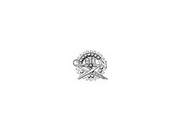

Trade Mark Journal No.2025/052 26 December 2025
UK00004295991 17 November 2025 (9,14,16,17,20,22,24,26)

- Class 9
- Magnetic badges; lanyards for holding cell phones.
- Class 14
- Decorative pins [jewellery]; decorative pins of precious metal; ornamental pins; ornamental pins of precious metal; pins [jewellery]; cloisonne pins; lapel pins; ornamental lapel pins; lapel pins [jewellery]; lapel pins of precious metals; jewellery hat pins; ornamental hat pins; hat jewellery; jewellery stick pins; pins being jewellery; hat jewellery; jewellery; necklaces [jewellery]; jewellery chains; pendants [jewellery]; wristlets [jewellery]; bracelets [jewellery]; identification bracelets [jewellery]; bracelets made of embroidered textiles; earrings; clip earrings; ear ornaments in the nature of jewellery; rings [jewellery]; fashion jewellery; costume jewellery; imitation jewellery; artificial jewellery; plastic jewellery; fake jewellery; jewellery in non-precious metals; synthetic stones [jewellery]; paste jewellery; cloisonne jewellery; enamelled jewellery; amulets [jewellery]; pewter jewellery; gold jewellery; jewellery containing gold; sterling silver jewellery; jewellery fashioned from bronze; precious jewellery; jewellery of precious metal; jewellery in semi-precious metals; jewellery plated with precious metals; jewellery made of crystal; jewellery made of glass; jewellery incorporating precious stones; jewellery fashioned of semi-precious stones; articles of jewellery with ornamental stones; jewellery made of semi-precious materials; jewellery with precious metal embroidery; brooches [jewellery]; jewellery for personal adornment; charms; jewellery charms; jewellery charms in precious metals or coated therewith; charms [jewellery] of common metals; necklace charms; bracelet charms; lockets [jewellery]; charms for keyrings; charms for key chains; key charms of precious metals; key charms coated with precious metals; key chains for use as jewellery; medals; medallions; commemorative medals; gold medals; medallions [jewellery]; medals made of precious metals; medals coated with precious metals; medallions made of precious metals; medallions made of non-precious metals; lanyards for keys; trinkets [jewellery]; ornaments [jewellery]; decorative articles [trinkets or jewellery] for personal use; imitation jewellery ornaments.
- Class 16
- Stickers; adhesive stickers; labels and tags; badges; paper badges; cardboard badges; paper name badges; name badges [office requisites]; none of the aforementioned goods relating to religion or philosophy.
- Class 17
- Decorative articles [badges] made of mica; decorative articles [badges] made of rubber.
- Class 20
- Plastic name badges.
- Class 22
- Cords; cords made of textile fibres; cords (sash); sash cords; twisted cords (sash).
- Class 24
- Badges made of fabric material; adhesive materials in the form of stickers [textile].
- Class 26
- Badges for wear, not of precious metal; embroidered badges; pinback buttons; button badges; ornamental novelty badges; ornamental novelty badges [buttons]; novelty buttons [badges] for wear; pins; hat pins, other than jewellery; scarf clips, not being jewellery; pins, other than jewellery; charms, other than for jewellery, key rings or key chains; decorative ribbons; hair ribbons; ornamental ribbons made of textiles; prize ribbons; silk ribbons; velvet ribbons; ribbons of textile materials; ribbons of textile for packaging and wrapping.
THETA TAU FRATERNITY
Representative: Russell-Cooke LLP